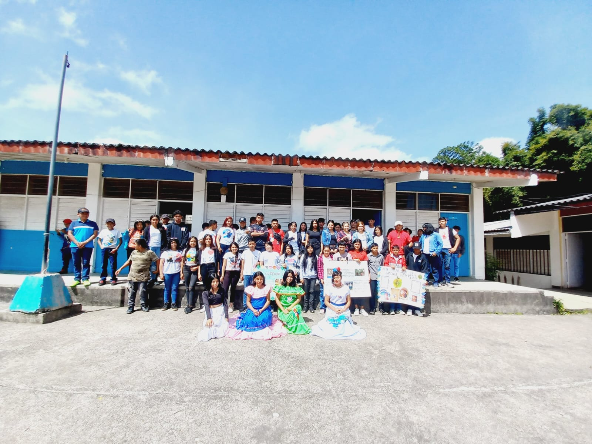
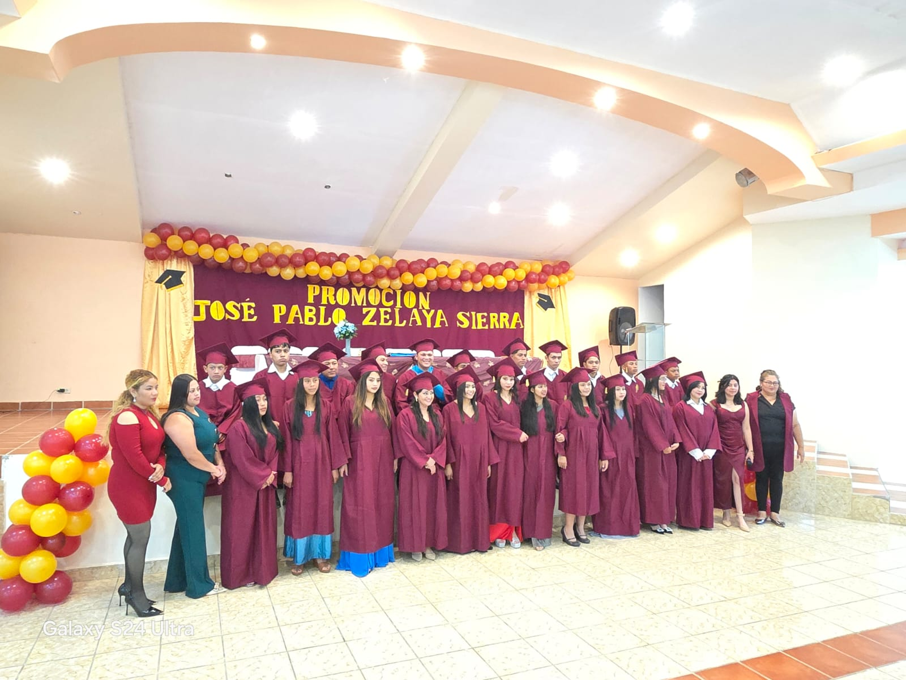
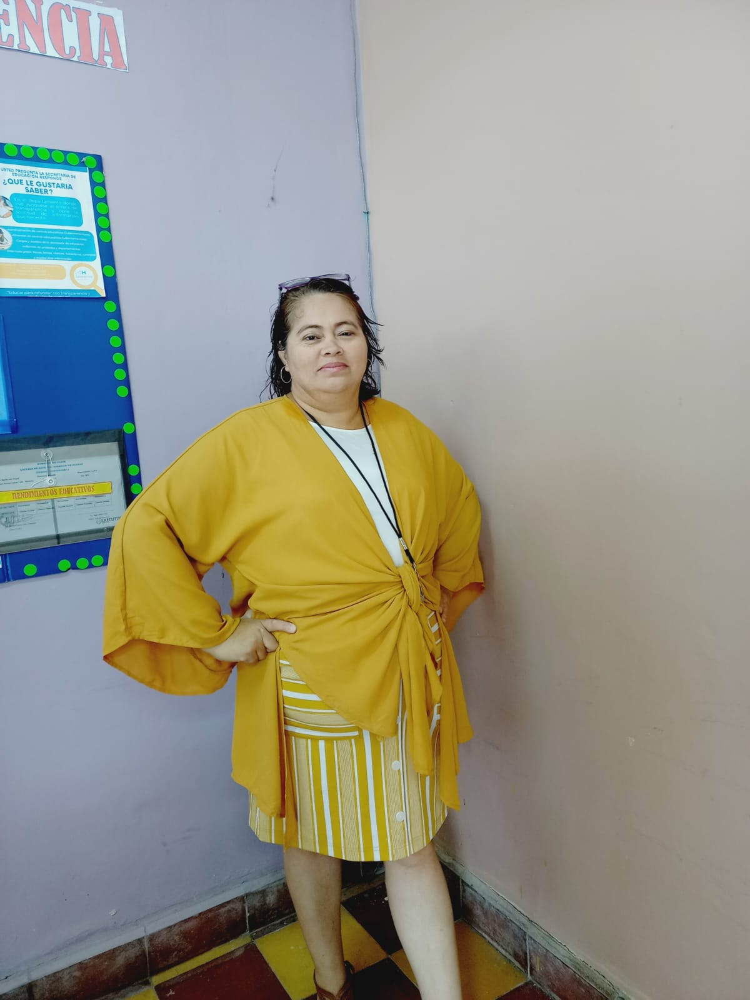
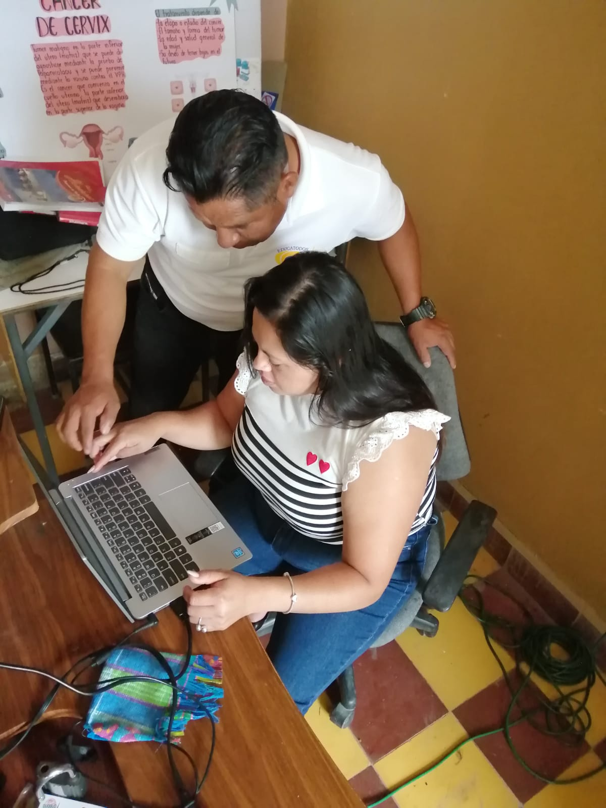
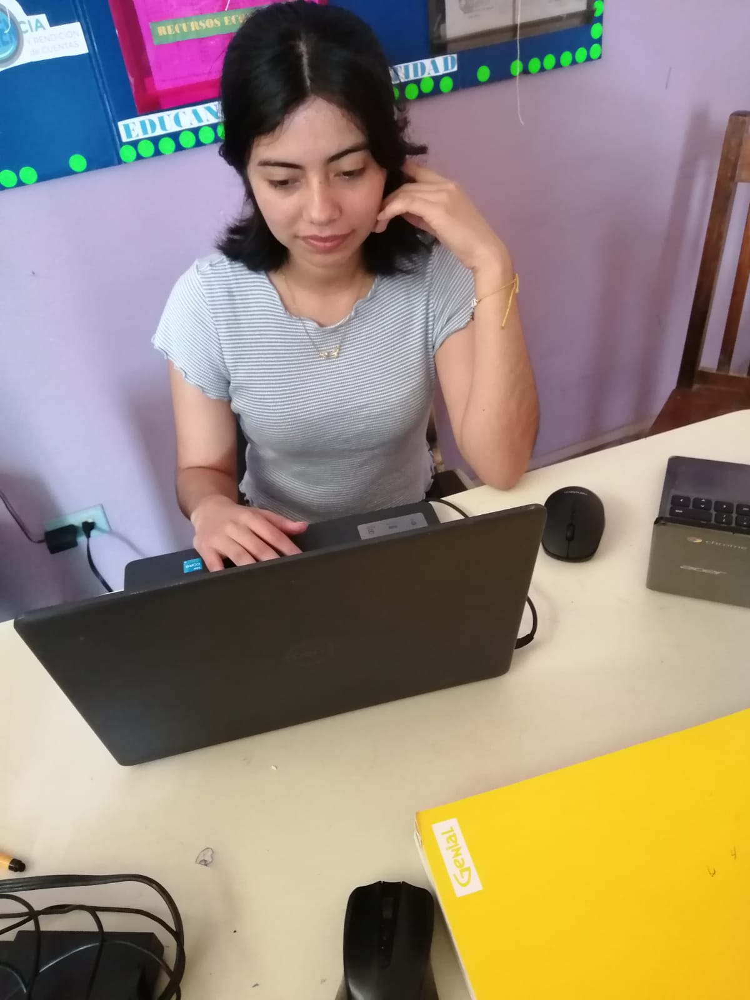

Galería




Un espacio creado para el crecimiento académico y personal.
El PEC del Centro “Dr. Marco Aurelio Soto” reafirma el compromiso institucional con una educación alternativa que transforma la vida de jóvenes y adultos mediante oportunidades reales de superación académica y personal. Su implementación permitirá atender necesidades diversas, reducir la deserción, fortalecer al equipo docente y mejorar los procesos académicos y administrativos La elaboración de este PEC reafirma que estamos avanzando por el camino correcto. Cada estrategia, cada meta y cada acción propuesta refleja nuestro compromiso con una educación alternativa de calidad para jóvenes y adultos. Este proyecto nos impulsa a mejorar, a innovar y a seguir construyendo un ambiente donde todos puedan aprender, crecer y alcanzar sus sueños. Miramos el futuro con optimismo, sabiendo que juntos estamos generando cambios reales y positivos en nuestra comunidad educativa.
Brindar una educación inclusiva, flexible y de calidad a jóvenes y adultos, fomentando el desarrollo integral de sus capacidades cognitivas, técnicas y socioemocionales mediante un modelo pedagógico adaptado a sus necesidades, promoviendo la equidad, la superación personal y su inserción activa en el ámbito laboral y social.
Ser un referente regional en la educación alternativa para jóvenes y adultos, reconocido por su innovación pedagógica, pertinencia curricular y compromiso con la comunidad; formando ciudadanos críticos, autónomos y comprometidos con el desarrollo de Honduras.


Educacion Inclusiba con metodos alternativos de aprendisaje donde el estudiante se pueda adaptar a cada tutoria.
Contamos con bachiller en ciencias y humanidades donde se desarrollan abilidades de desarrollo laboral, facilidades de comunicacion, trabajo en equipo.
Talleres donde el alumno aprende a desarrollar las abilidades tecnicas con conocimentos practicos deacuerdo a taller bocacional que eslijan. Corte y confeccion, Manicurista y Barberia.

Lorena Claros
Directora Académico

Ana Maricela
Profesor de Historia

Angela Eunice
Profesor de Lenguaje
Inscripciones abiertas todo el año.
Consulta requisitos, horarios y modalidades disponibles.
Dirección:
Teléfono: +504 9754 0592
Email: isemed.marcoaurelio.soto@gmail.com